Never explain your
project twice.思簿
A Mac app that holds the background of everything you are working on — and hands a whole project to an AI in one paste.
Copy anything worth keeping and tap ⌥ twice. It lands in the right project with its source — the page, the tab, the moment. Weeks later, one click turns that project into text you paste into any AI, instead of you typing the background again.
- Free
- Apple Silicon Mac
- Signed & notarised by Apple
- Works offline
Monday, you open a new chat and type it all out: what the project is, who it is for, what you already decided, what you tried and dropped. Wednesday, another chat — you type it again, shorter this time, leaving out the part that mattered. With Spool it was all saved while you worked. One click, one paste, and the AI starts from where you actually are.
Do the whole thing right here
Save three notes, pack them, and watch a brand-new AI chat pick up the project without being told anything. The content is written in advance; every step is exactly what the app does.
For work that runs for months,
not for an afternoon.
Spool earns its keep when you come back to the same project week after week — and open an AI chat about it nearly every time. If you need one quick answer today and will never think about it again, you do not need this.
Building something over months
The bug you already ruled out, the library you chose and the reason you chose it, the approach you dropped in week two. A fresh chat stops walking you back into circles you have already left.
A course, a thesis, a field you are learning
The line in the lecture you did not follow, the paper you will have to cite, the explanation that finally made it click. Come revision time, the AI quizzes you on your own material instead of the internet's.
Three AI chats a day, all starting from nothing
Different apps, different windows, and every one of them meets you as a stranger. Spool is the memory they do not have — and the same paste works in all of them.
Save it, keep it, paste it
One key. Nothing to decide.
Copy anything, then tap ⌥ twice. It goes straight into the project you are working on, along with where it came from — down to the browser tab. The confirmation appears with the cursor already in a note box: type the thought that made you save this, or click away to skip. Your own words outlast the excerpt, and they are what an AI reads first.
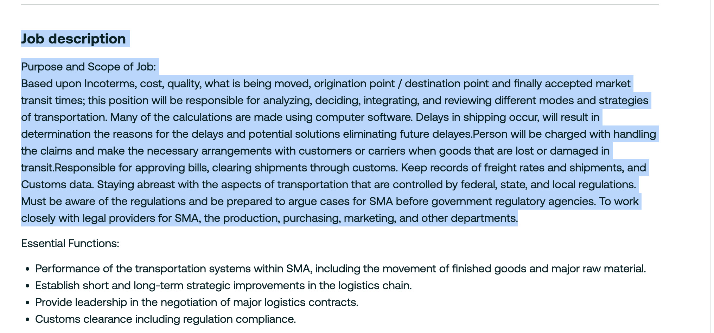
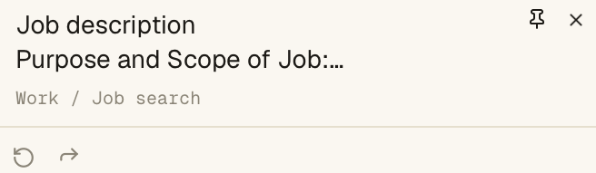
⌘C, then ⌥⌥The real thing: the lines you selected on the page, and Spool's note floating over the corner — what got saved, where it went, and a box for the thought you had.
A list, not a chat.
Everything you save stacks up in time order under one project. Two levels only — workspace, then project. No folders to build, no tags to pick. Come back next week and the newest notes show you exactly where you stopped.
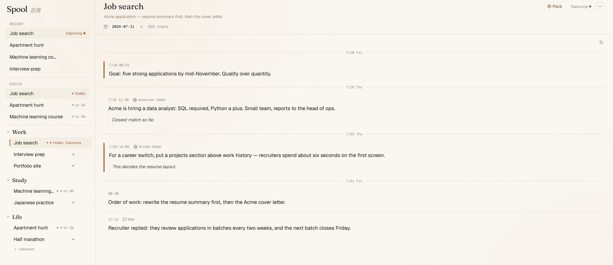
One project, five notes: your goal, something you read, an answer from an AI chat, your own decision, an email. Each one keeps its time and its source.
One click, ready to paste.
Spool writes the project out as plain text: your own words first, things you read kept as sources, anything an AI wrote marked so you can check it. Paste it into any AI — or just read it yourself to get back into the work.
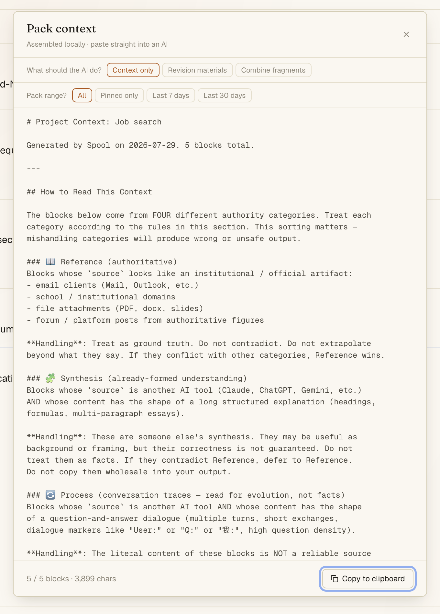
The real Pack window: five notes become 3,899 characters of ready-to-paste text. Two choices, one button.
That is the whole loop. It is about a minute to set up.
Download for macOSFree · Apple Silicon Mac (arm64) · signed & notarised by Apple
Week one saves you typing.
Week six saves you the thing you forgot.
Day one it already works: three notes, one paste, and you skip retyping the background. Six weeks later the same project holds the decision you no longer remember making, the link you would never find again, and the reason you ruled something out — and all of it goes across in that same single click. Nothing about how you use it changed. The pile just got deeper.
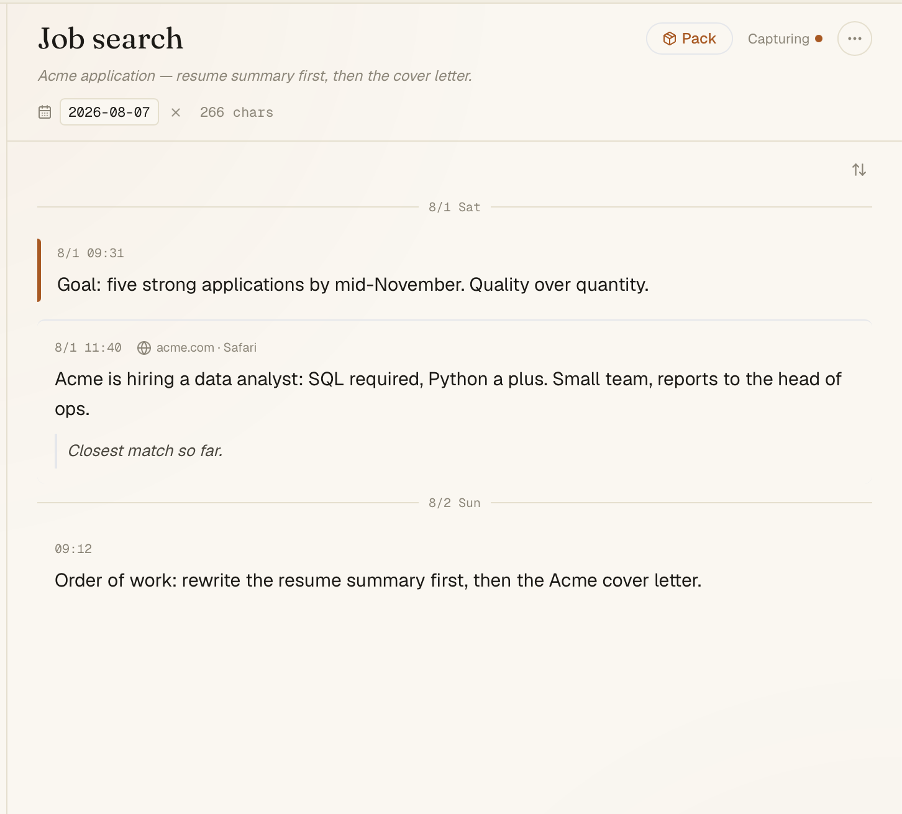
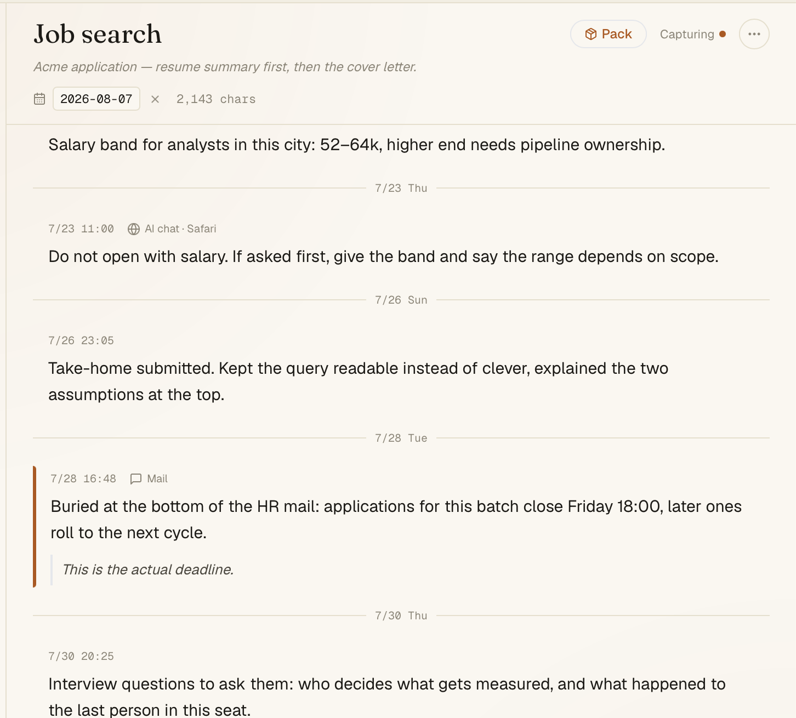
The same project, six weeks apart. Look at the pinned line on the right: a deadline that was buried at the bottom of an email. That is the kind of thing nobody remembers on their own — and it now goes into the paste with everything else.
AI can read and write.
It has to sign its name.
Pasting works everywhere. The AI apps you already use can do one better: with your permission they open Spool themselves — read weeks of context, search every project, and file what they find back in the right place. Everything they write is signed and added below your notes, never over them. Two switches you turn on yourself, and no server anywhere.
Apps you chat with
You ask in the chat box, the same as always.
Tools you code in
You ask in the editor's AI panel, or in the terminal.
Either way you stay where you are — Spool just hands the notes over. Connect it once in Spool's settings, restart that app, and it can read your projects from then on. Not on the list? Copy one short setting out of Spool and paste it into your app.
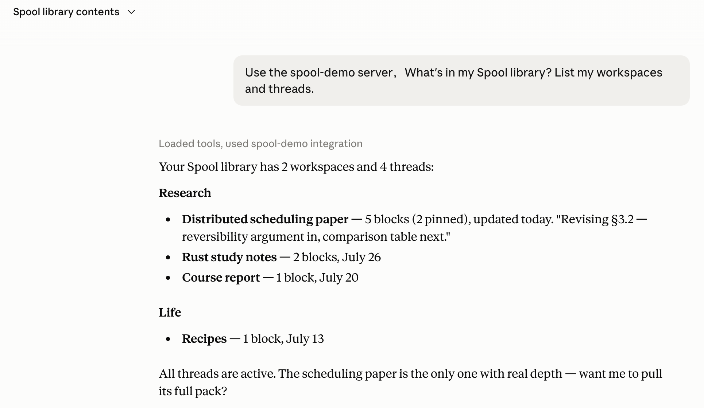
One plain question, and the AI reads your workspaces, projects and note counts straight off your Mac.
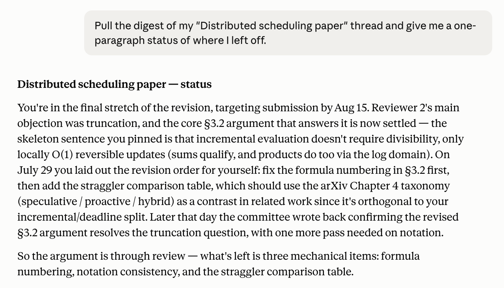
One paragraph built from notes you saved over three weeks, from four different places. This is the part a single paste cannot do.
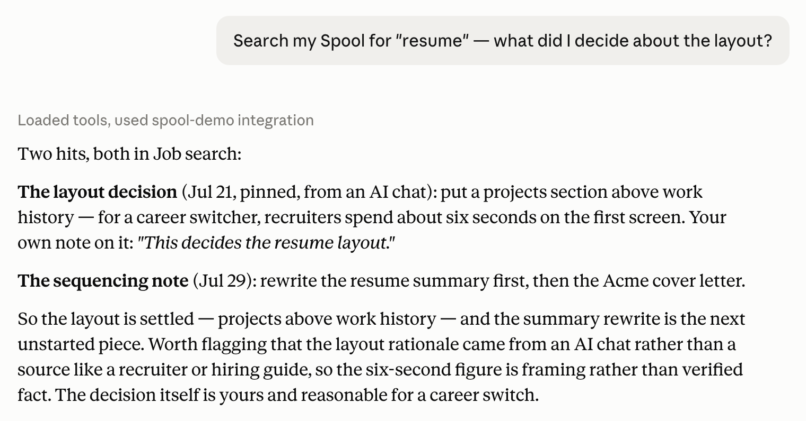
Every result keeps its source: what you read somewhere, what an AI suggested, and what you decided yourself.
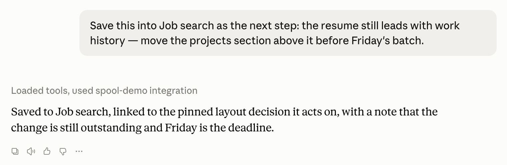
Ask it to file a conclusion and it writes one note — with a short reason, and a link to the note it builds on.
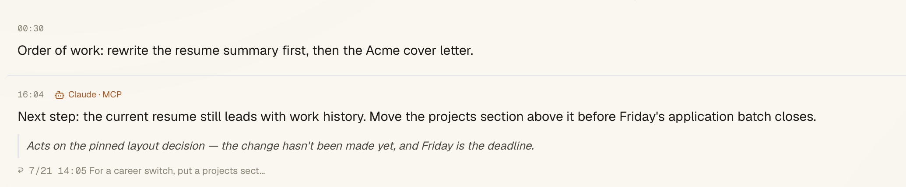
…and here it is inside Spool. Signed Claude · MCP, added below your note instead of over it, with the ↩ line pointing at the exact note it answers.
Screenshots were taken with a library built just for this, so nothing personal appears in them.
What you are actually installing
Two macOS permissions, and what they are for
This is the step that surprises people, so here it is up front. Spool asks for Input Monitoring and Accessibility. Input Monitoring is how it hears the double-tap of ⌥ — macOS counts any system-wide shortcut as monitoring. Accessibility is how it reads which window and browser tab you copied from, so the note keeps its source.
Say no and Spool still runs: you can write notes, pack a project and paste it as usual — only the one-key capture stops working. Either way nothing leaves your Mac. The app is built with no network access at all, so there is nowhere for it to send anything.
Signed and notarised by Apple
The download is signed with an Apple Developer ID and notarised by Apple, so macOS opens it without the "unidentified developer" warning. Apple Silicon only — an Intel Mac will download it and fail to open it.
One file, on your Mac
Every workspace, project, note and annotation lives in a single spool.db
file. Copy it, back it up, delete it. No account to create, no server to trust, nothing to
cancel.
Nothing is tracked
No analytics, no telemetry, no crash reporting. Your clipboard is read at the moment you double-tap ⌥, and not otherwise. Notes only leave when your own AI app reads them, and only after you switch that on.
Made by one person
No company, no funding, no roadmap meeting. The build is written up as it goes — including the day I wiped my own database and what I changed so it cannot happen again. The build log is public; the source is not open at this point.
The things people ask first
Will it run on an Intel Mac?
Not today. The build is Apple Silicon (arm64) only — on an Intel Mac the download succeeds and the app will not open. There is no Intel build to point you at.
Windows? iPhone?
No. Spool is a Mac app, and the capture shortcut is built on macOS-specific APIs. I would rather say that plainly than put up a waiting list for something that does not exist.
Why is it free?
There is no server, no account and no company behind it, so there is almost nothing to charge for. One person builds it, and it runs entirely on your own machine.
What happens to my notes if you stop working on it?
They stay exactly where they already are: one spool.db file on your Mac,
in SQLite — a format plenty of other software can open. Spool going away does not take your
notes with it.
Is it useful if I do not use AI much?
Yes, though you would be using half of it. Packing a project into readable plain text is worth it on its own — reading it back is how most people restart work after a week away.
How do I update it?
By hand for now: download the new dmg and replace the app. There is no automatic update channel yet, which also means the app never phones home to check for one.
Does it watch my clipboard all the time?
No. Spool reads the clipboard at the instant you double-tap ⌥, and at no other time. It does not poll, and it keeps no history of what you copied.
Do I have to organise anything?
There are two levels — workspace, then project — and both already exist when you open the app. No folders, no tags. Captures go to whichever project you marked as the one you are working on.
The mark: a spool seen from above, with its thread pulling free.
Stop explaining the same project again.
Free, works offline, ready in a minute.
Download for macOSApple Silicon Mac (arm64) · signed & notarised by Apple · no account · nothing is tracked · all releases on GitHub